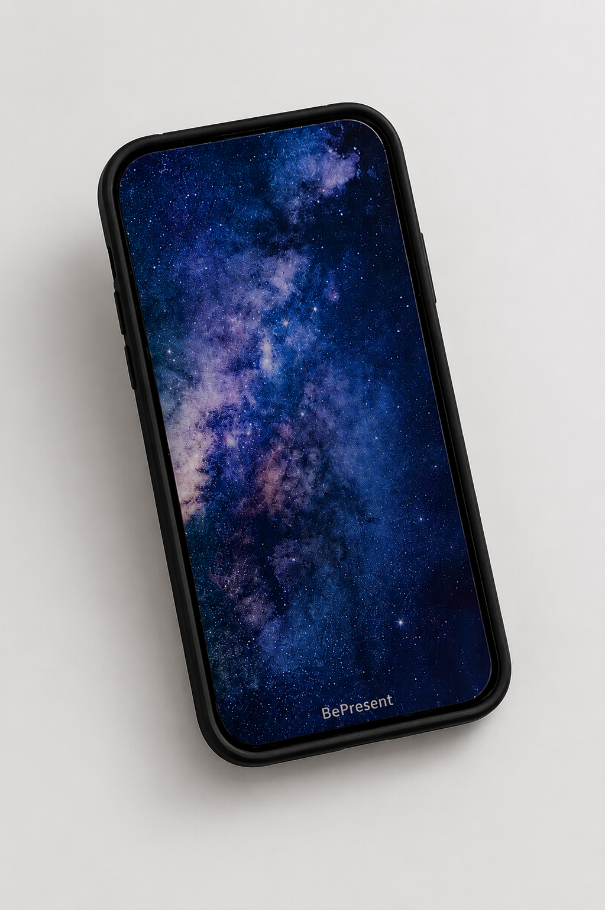
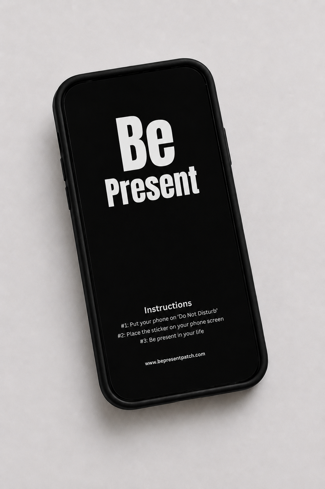
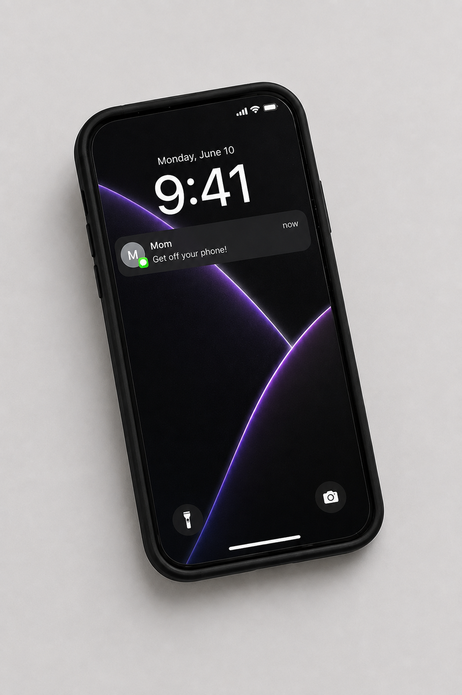
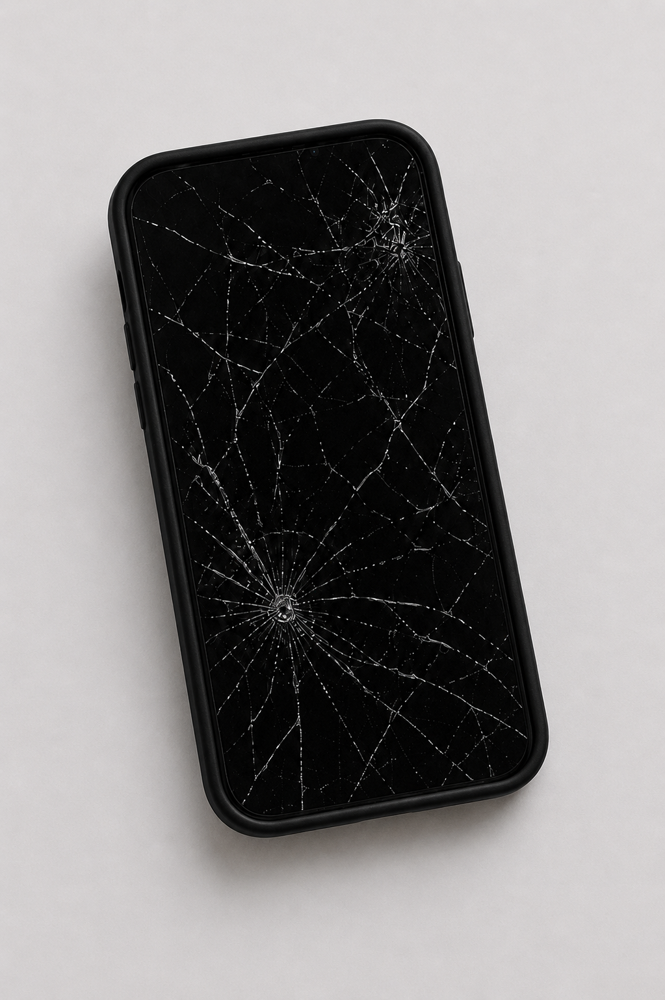
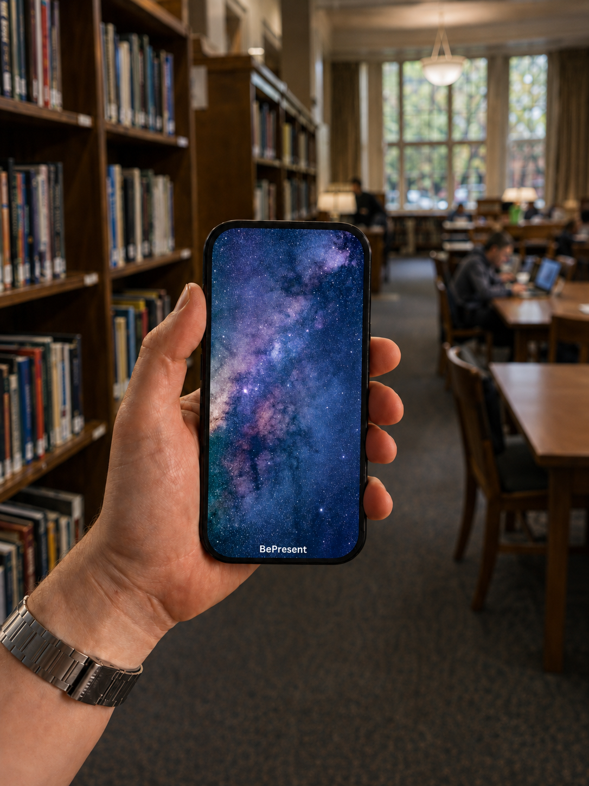
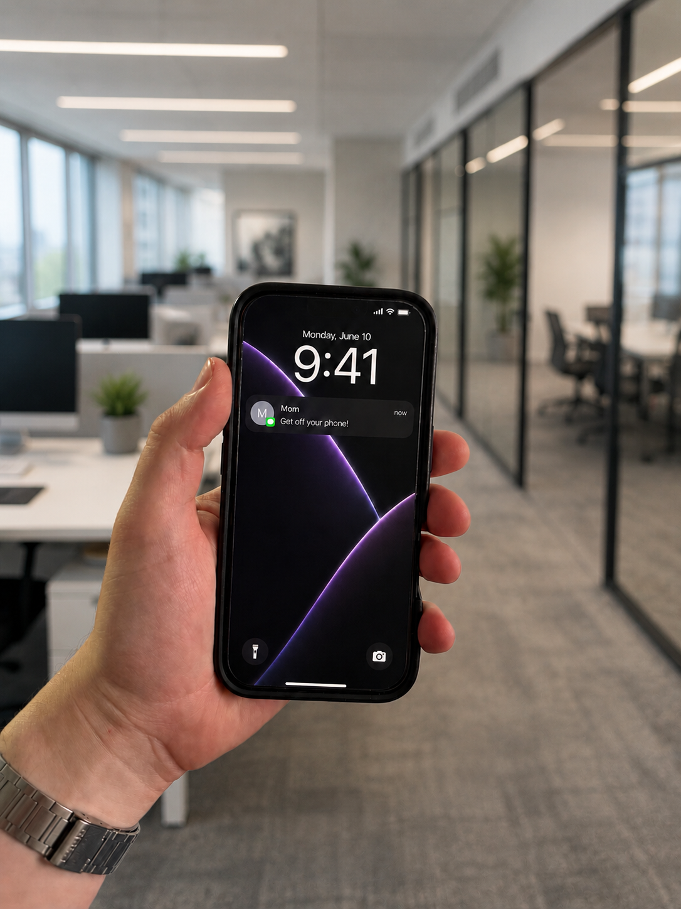
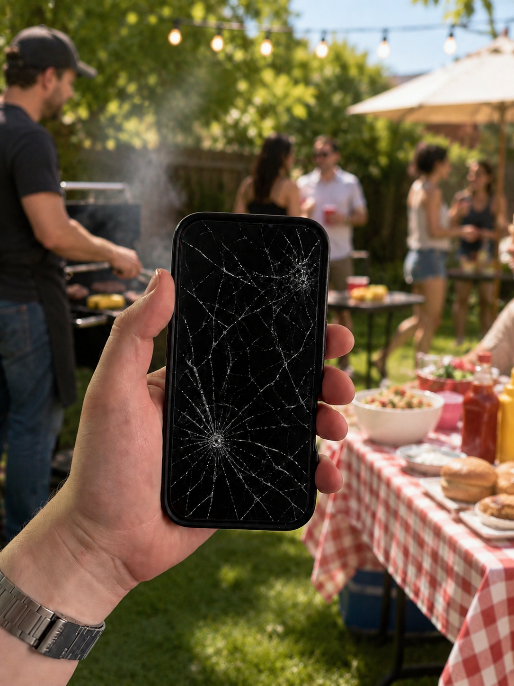
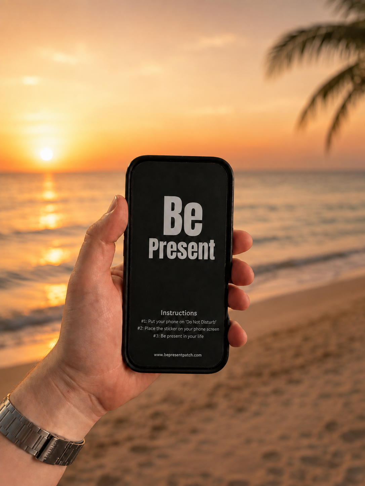

Peel. Stick. Be present.
A physical phone barrier to help reduce screen time.
Be Present Patch is a removable phone screen sticker designed to help with phone addiction habits, mindless scrolling, and constant checking. Cover your screen when you study, work, or spend time with people, then peel it off when you truly need your phone.




Add a physical barrier before the automatic phone check.
02 Build better phone habitsUse it for studying, work from home, events, friends, and weddings.
03 Customize itCreate patches for schools, companies, venues, clubs, weddings, or personal focus routines.
Patch designs
Multiple styles to match your energy.
From study mode to parties, work, and vacation, the patch can feel like the moment you are trying to protect.




Why people get it instantly
Apps can be ignored. A physical screen blocker is hard to miss.
Screen time tools and app limits can help, but a physical phone barrier adds friction you can see and feel. The patch covers the visual trigger, interrupts the scroll habit, and keeps emergency access one peel away.